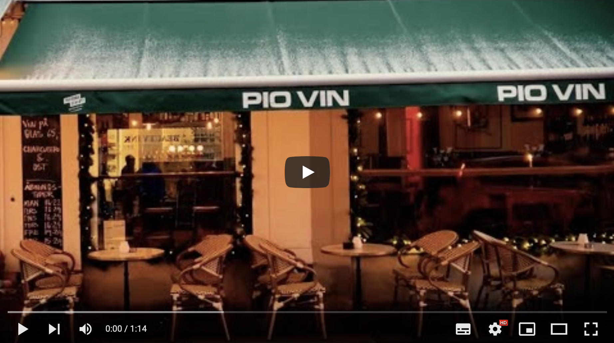
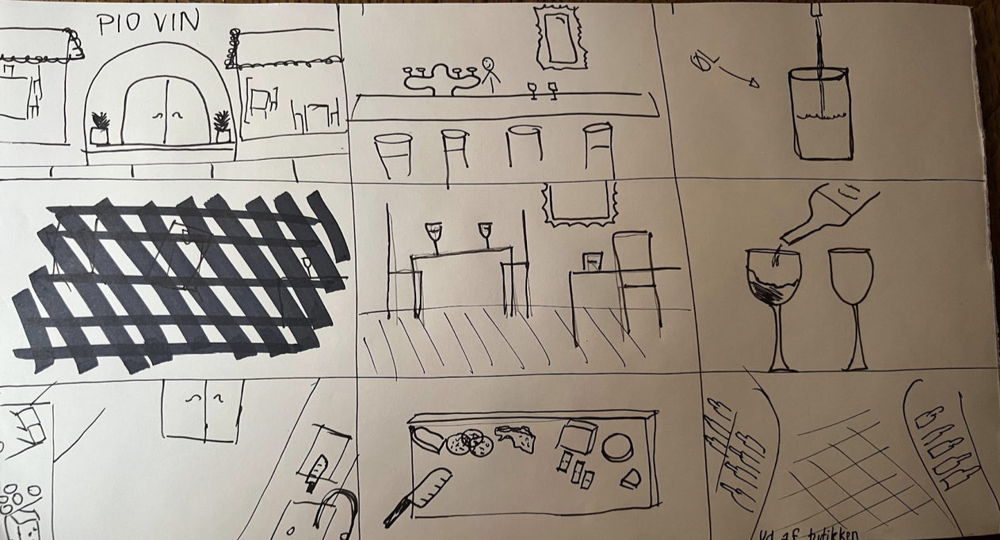

Tema 05 Grundlæggende indhold
Temabeskrivelse
Dette tema har givet mig en grundlæggende indførsel i video produktion. Jeg har lavet forarbejdet til optagelse, selve optagelse, og klipningsarbejdet. Jeg har brugt min Iphone til optagelse af videoen og ekstern lyd og Premiere Pro til redigering. Dette er væsentligt for at kunne lave mindre video/foto produktioner selv, samt for bedre at kunne kommunikere professionelt med kunder.
Link til afleveringer
Video produktion
Show, Don't tell


Pio vinbar redesign
I denne opgave var vores mål at lave et redesign for en forbedret brugeroplevelse af Pio's nuværende hjemmeside.